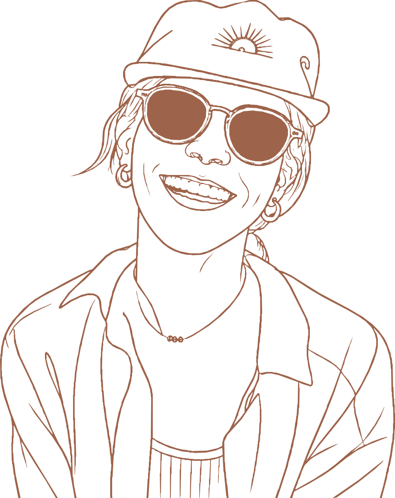

kristin garza.

A cream-ground editorial system for a UX portfolio specializing in institutional trading and enterprise platforms. Three categorical accents — clay, ochre, slate — serve as taxonomy for case studies, not decoration. All text pairings clear WCAG AA.
Surfaces & Ink
Ratios shown against Cream (#FAF7F0). Ink Mute (4.6:1) is captions-only — body copy uses Ink 3 or darker.
Accents — Clay · Ochre · Slate
Approved pairings
Note on --clay-deep (#C47655). Used for fills and UI accents only — not for body text. Use --clay-ink (#8E4A2E) whenever clay needs to be readable text or a button label.
Scale
96 / 100 · +3%
Hero — once per page
80 · −1%
Brush accent · use sparingly
clamp(44–80px) / 105 · −1%
clamp(28–40px) / 115 · −2.2%
24 / 140 · −1.2%
contextual · −1.2%
Pull quotes, accents
18 / 135 · −0.5%
16 / 165
Color: ink-2
13 / 150 · Color: ink-3
13 · +16% tracking · UPPER
Color: clay
12 / 140 · Color: ink-mute only
12–13 · Tables, tickers
Eyebrow treatment
- color
- --clay · 13px · JetBrains Mono 500
- rule
- 32px after the label · 1px · 40% opacity
- used in
- section openers, before H1
- color
- cream @ 90%
- rule
- cream @ 45%
- used in
- any saturated band
- variant
- rule stretches full width
- used in
- case study sections, before section headings
Scale
Radii
Inputs & buttons → r-2. Cards & bands → r-3. Chips → pill. r-1 reserved for inset tags inside thumbnails.
Elevation
resting cards
hover state
modals only
All shadows are warm-tinted (rgba(55,43,11,…)). No cool greys — cool shadows look uncanny on cream.
- bg / fg
- clay-ink (#8E4A2E) / cream · 6.2 : 1
- hover
- darker clay-ink
- focus
- 3px slate ring, 2px offset
- radius
- r-2 (8px)
- border / fg
- clay / clay-ink · transparent bg
- hover
- clay-tint fill + clay-ink ink
- used for
- "Get in touch", secondary CTAs
- fg
- ink-2 · no border
- hover
- 6% ink wash + ink fg
- used for
- nav, toolbar actions
- height
- ~24px · pill radius
- border
- 1px of the matched accent at 18–20%
- text
- always --clay-ink / --ochre-deep / --slate-deep for AA on tinted backgrounds
- padding
- 12 × 14px
- border
- hairline-strong → ink-3 hover → slate focus
- focus ring
- 3px slate @ 18%
- radius
- r-2 (8px)
- min-height
- 96px · resize vertical
- label
- UPPERCASE · +0.04em · ink-2 · 600 weight
Editorial index .index-grid
The default for listing case studies. Three columns, one hairline between each, the arrow pinned to the baseline. No fills, no boxes — whitespace is the container.
Redesigning order management
Pulled "build" and "submit" apart on the order ticket — simplifying the surface and cutting trade errors across the desk.
→ Case studyInside the rule engine
Replaced tribal knowledge with guided workflows — so compliance teams could write and ship rules without an engineer in the loop.
→ Case studySimplifying positions info
Re-architected how positions surface in trading workflows — one place to answer "what do I own, what's it worth."
→Work card — tinted .work-card
Soft categorical tint fills the whole card as one continuous surface. The interface stub floats inset, framed against white — a screenshot pasted into a notebook, not a header block.
Redesigning order management
The order ticket had grown into three modals stacked on top of each other.
Inside the rule engine
Compliance teams wrote rules in plain English and handed them to engineers to translate.
Simplifying positions info
Traders bounced between two tabs to answer "what do I own, what's it worth".
Feature card .work-card.feature
Same card, full-width — screenshot inset on left, story on right. For one highlighted project that deserves room.
Inside the rule engine
Compliance teams used to write trading rules in plain English and hand them to engineers to translate into code. I redesigned the rule builder so they can construct the logic themselves — closing a long-running cycle of bugs and misinterpretations.
Compact — bits & pieces .work-card.compact
Text-only sibling for short notes. A serif pull-quote can stand in for the visual. The empty state is a dashed .slot.
Building a reusable quote component
Designed and documented a unified market-quote component adopted across 4 trading surfaces.
"the work the work didn't need"
Killing a feature to protect the trader
Used research to push back on a PM-driven feature that would have added friction.
Empty-state slot. Dashed border, no title, no CTA.
Cream at 92% opacity + backdrop-filter: blur(16px) saturate(140%). Sticky at top. Wordmark is 13px JetBrains Mono 500 uppercase — same treatment as eyebrow.
Footer
Single-band footer in clay-ink (6.2:1 with cream). The band is the punctuation — no internal hairlines. Clay at full saturation appears only here and in the primary button.
AI × Design.
A running collection of ideas, talks, and articles shaping how I think about design in the age of AI — plus my own take on what's changing and where the real value lives.
Designing for complexity, without adding to it.
The quieter band moment. Use slate when the section is reflective rather than promotional — about, process, philosophy.
Have a hard problem?
Loudest band. Reserve for the page's single contact moment. Don't use clay in two band positions on one page.
Never silhouette or vignette into cream. If a screenshot needs framing, use the categorical tint as a 28px inset — not an outline.